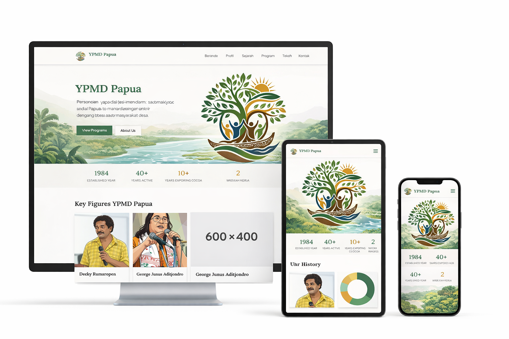
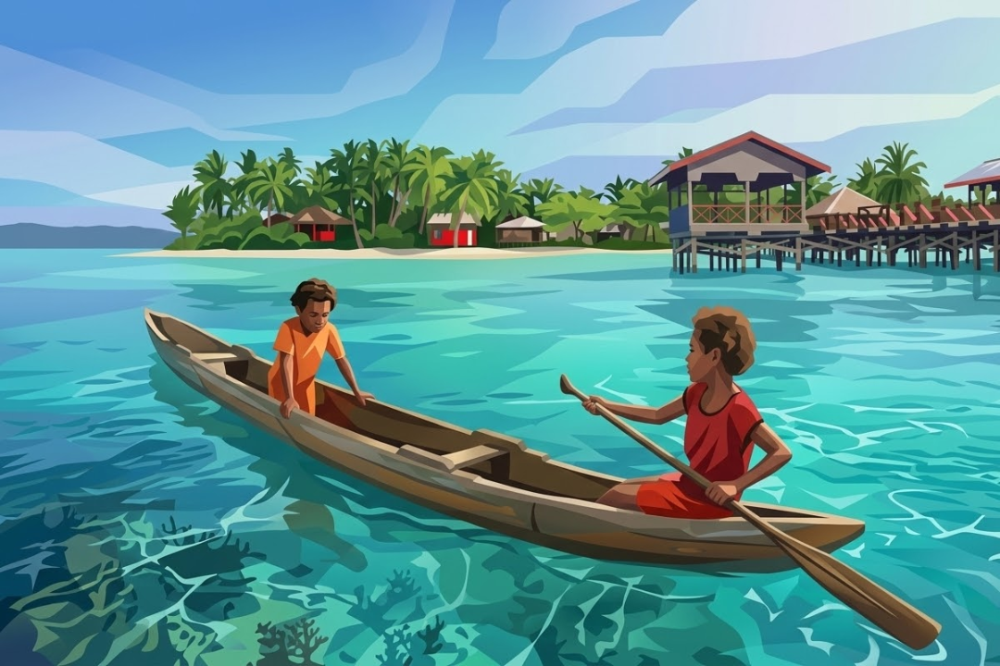
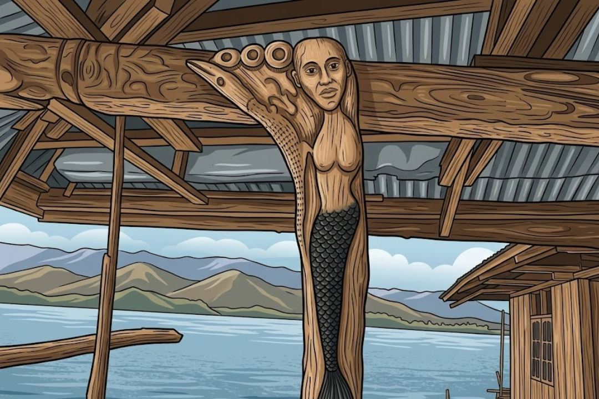
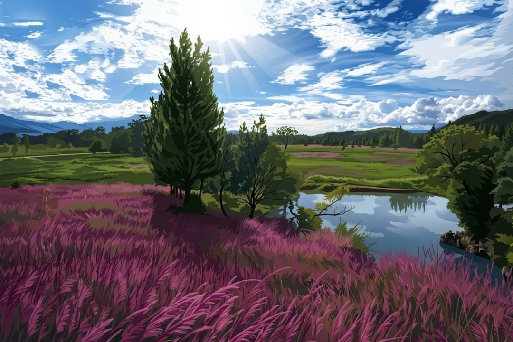
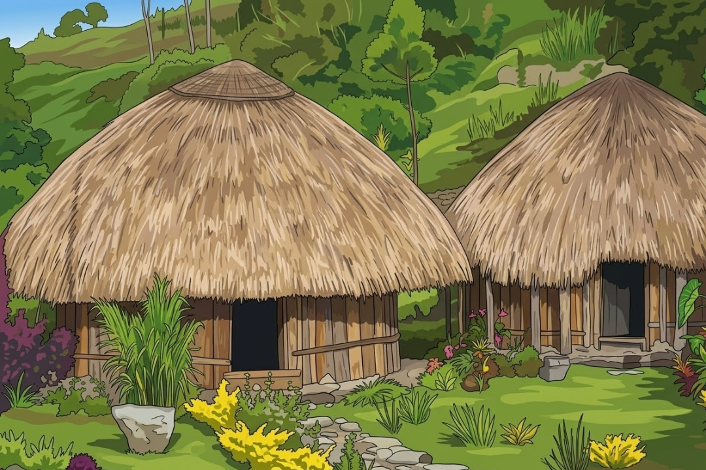
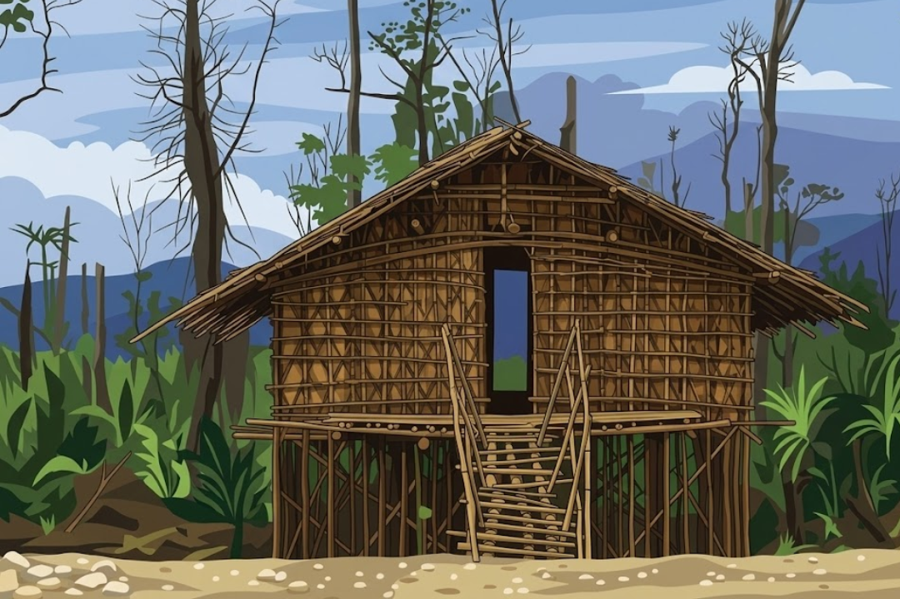

Kakao Organik Papua
Pengembangan dan pemasaran kakao organik melalui konsep people to people trade (perdagangan antar rakyat) — langsung dari petani Papua ke konsumen di Jepang tanpa perantara. Beroperasi lewat CV Cacao Kita sejak 2009.
Lembaga masyarakat sipil yang mendampingi komunitas adat Papua menuju kemandirian ekonomi, kelestarian lingkungan, dan penguatan hak-hak dasar masyarakat desa.

| Nama Lengkap | Yayasan Pengembangan Masyarakat Desa |
| Akronim | YPMD Papua |
| Tahun Berdiri | 8 Desember 1984 |
| Bentuk Hukum | Yayasan |
| Alamat | Jl. Jeruk Nipis 117 Kotaraja, Jayapura, Papua 99225 |
| Telepon | 0967-581071 |
| Wilayah Kerja | Papua, Maluku |
| Jaringan | FOKER LSM Papua, APF (Asian People's Fund for Mutual Benefit) |
"Menempatkan komunitas lokal (masyarakat desa) menjadi subyek pelaku pembangunan, bukan konsumen program."
Menggalang kekuatan dan kemampuan masyarakat dalam menangani permasalahan sosial, politik, dan ekonomi melalui: pengembangan organisasi kelompok, ekonomi pertanian, dan nilai kehidupan yang mendukung integrasi suku.
Cikal bakal YPMD, didirikan oleh George J. Aditjondro dan Ir. August Rumansara sebagai kerja sama Gereja Katolik (Delsos) dan GKI di Tanah Papua. Berkembang menjadi Irja DISC yang menerbitkan buletin Berita Pembangunan Desa, dengan logo desain seniman Arnold Ap.
Didirikan untuk membuka ruang keterlibatan lebih luas bagi semua pihak. Langsung menerbitkan buletin Kabar dari Kampung (KdK) — pelopor jurnalisme kampung di Papua berbahasa Indonesia yang sederhana dan merakyat.
KdK terbit selama 14 tahun, menjadi media alternatif kritis di Papua, melahirkan banyak jurnalis dan aktivis. Selain itu YPMD membangun saluran air bersih dan kapasitas masyarakat di kampung-kampung.
Kembali ke YPMD setelah bertugas di Yayasan Rumsram (1990–1997). Di bawah kepemimpinannya, fokus bergeser ke kemandirian ekonomi masyarakat adat melalui pertanian kakao organik.
Jaringan Asian People's Fund for Mutual Benefit (APF) berkomitmen membeli bahan organik dari Papua. CV Cacao Kita dibentuk sebagai unit bisnis perdagangan kakao organik Papua.
Kakao organik Papua pertama kali dikirim ke Jepang. Sistem perdagangan langsung tanpa perantara — petani dan konsumen bertemu langsung di kampung, laporan bulanan transparan. Café "Kakao Kita Papua" dibuka di Kotaraja, Jayapura.
Kerja sama dengan Bank BPR Phidectama Jayapura. Sebagian hasil penjualan kakao disimpan sebagai tabungan untuk biaya pendidikan anak dan modal usaha — disambut hangat kelompok petani perempuan.
"Perubahan itu harus muncul dari dalam masyarakat sendiri. Hari ini masyarakat harus punya uang tunai yang cukup agar bisa menolong dirinya."
Pengembangan dan pemasaran kakao organik melalui konsep people to people trade (perdagangan antar rakyat) — langsung dari petani Papua ke konsumen di Jepang tanpa perantara. Beroperasi lewat CV Cacao Kita sejak 2009.
Mendampingi dan mengorganisir masyarakat adat Papua sebagai subjek pembangunan. Memastikan hak-hak komunitas lokal terlindungi dalam isu pertanahan, lingkungan, dan otonomi ekonomi.
Program tabungan (sejak 2014) bersama Bank BPR Phidectama Jayapura. Sebagian hasil penjualan kakao ditabung untuk biaya pendidikan anak dan modal usaha — dikelola aktif oleh kelompok petani perempuan.
Pelopor jurnalisme akar rumput di Papua melalui buletin Kabar dari Kampung (1984–1998). Melatih aktivis dan warga menulis berita dari lapangan, melahirkan banyak jurnalis dan tokoh masyarakat sipil Papua.
Pembangunan saluran air bersih dan pengembangan kapasitas masyarakat kampung, terutama aktif di era 1980-an hingga 1990-an, sebagai bagian dari program pembangunan masyarakat desa.
Penelitian dan advokasi isu-isu sosial, ekonomi, dan lingkungan yang memengaruhi masyarakat adat Papua. Termasuk analisis gender dalam pemanfaatan hasil pertanian dan pengembangan kebijakan pertanian organik.
Alumnus FISIP Universitas Cenderawasih, bergabung YPMD sejak 1988. Penggerak utama kakao organik Papua dan konsep people to people trade. Salah satu pendiri FOKER LSM Papua. Wafat 26 Juli 2022 pada usia 63 tahun.
Mantan jurnalis majalah Tempo, pelopor jurnalisme kampung di Papua sejak 1984. Inisiator buletin Kabar dari Kampung. Mendirikan YPMD bersama August Rumansara. Wafat 10 Desember 2016.
Bersama George Aditjondro, membangun gerakan masyarakat sipil Papua sejak era 1980-an melalui KKO dan Irja DISC sebelum mendirikan YPMD pada 1984.





Jl. Jeruk Nipis 117 Kotaraja (Furia),
Jayapura, Papua 99225
0967-581071
Di samping Kantor YPMD, Kotaraja, Jayapura.
Nikmati produk coklat langsung dari petani Papua.
FOKER LSM Papua
APF (Asian People's Fund for Mutual Benefit)